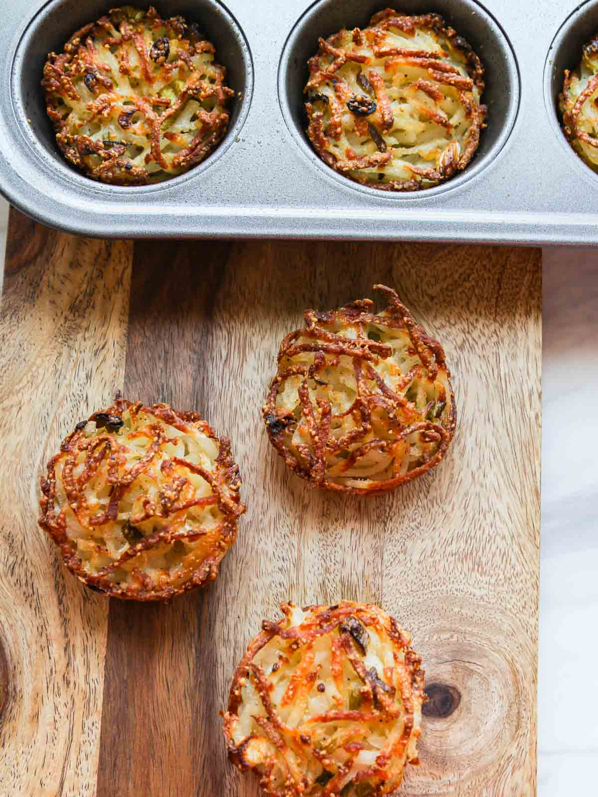

Hashbrowns

Description
Crispy Oven Hash Browns are baked in muffin tins using frozen or real potatoes.
This is the easy way to make perfect hash browns without spending time at the stove.
Skip the traditional cooking method of frying in a large skillet altogether.
Both sides and the bottom of each one have a crispy exterior and no messy stovetop to clean!
Ingredients
- 20 ounce bag hash brown potatoes
- 1 cup sliced green onions (optional)
- ½ cup Kraft grated parmesan cheese or real grated parmesan cheese
- 1 teaspoon kosher sea salt
- ½ teaspoon cracked pepper
- 2 tablespoons olive oil
Steps
- Defrost the potatoes overnight in the fridge. This is a key step!
If you forget, simply place the frozen bag of shredded potatoes
into a bowl of cold water.
- Spray your non-stick muffin tins with coconut oil non-stick spray.
- Press potatoes really dry, this helps them crisp and avoids soggy hash browns.
You can use a salad spinner to dry them, clean kitchen dish towels, paper towels,
or a piece of cheese cloth. Squeeze to remove all the excess liquid.
Dry them really well so you don't see much moisture. Again,
the key to this recipe is you don't want much liquid in them.
- Once defrosted and dry, transfer the potatoes into a large bowl,
and add green onions, parmesan cheese, sea salt, cracked pepper,
and olive oil. Stir until well combined.
- Scoop into well-sprayed muffin tin, and distribute the potato mixture in
each in an even layer. Press down just a little bit, this helps
them form their shape and bake.
- Bake 45 minutes at 400 degrees until crispy.
- Store leftovers (if any!) in the fridge and reheat in the microwave.
These make a great on the go breakfast for school or
work and can be served with dinner too!